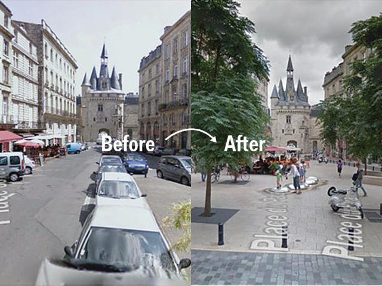
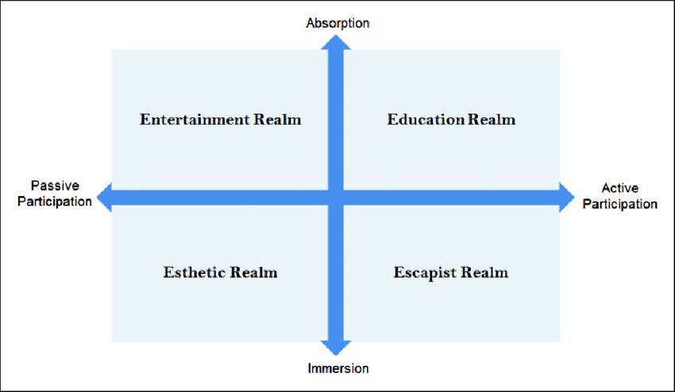
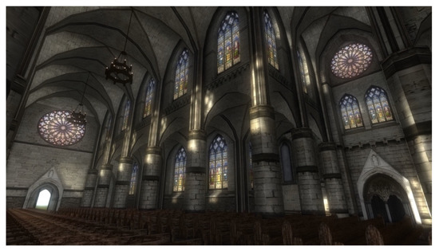

This week has made me realize that what I can achieve is a space where can experience a feeling similar to that of being in a church.

Yahoo Finance. (n.d.). 49 incredible public-space transformations captured by Google Street View [Online image]. Available at: https://sg.finance.yahoo.com/news/49-incredible-public-space-transformations-154900663.html (Accessed: 8 May 2025)
Victor Turner’s concept of “liminality” is truly inspiring. He stated that during a ritual, an individual is stripped of their original social identity and enters an uncertain yet promising “intermediate zone,” and then returns with a new identity. In fact, this is very similar to users putting on VR headsets and entering the virtual world of the church, they detach from their real-life identities (students, tourists, designers) and enter a space where a different logic operates. This space doesn’t necessarily have to “speak”, it can use echoes, light, musical notes, and rhythms to naturally immerse people in a state of contemplation or connection.
For example, when users enter through the church door, they are first enveloped in a faint light (suggesting the transition from reality to the “liminal space”), the echoing footsteps in the vast emptiness guide them towards the main altar. There, a beam of light makes them halt and listen to a historical snippet or a prayer text… This is neither a game task nor an information delivery, but rather a “ritual moment.” This has made me reconsider that “interaction” doesn’t necessarily mean pressing buttons or pulling levers; it can also be the act of being willing to pause and immerse oneself in the experience.

Shim, C., Oh, E. J., & Jeong, C. (2015). The four realms of an experience [Online image]. In A qualitative analysis of South Korean casino experiences: A perspective on the experience economy. Available at: https://www.researchgate.net/figure/The-four-realms-of-an-experience_fig1_284903618 (Accessed: 8 May 2025)
The book “The Four Realms of Experience” by Pine & Gilmore is a classic in the field of experience design. They categorize experiences into four types:
- Entertainment: Users passively receive content (such as watching a movie).
- Educational: Users acquire new knowledge (such as a museum guided tour).
- Escapist: Users immerse themselves in another world (such as a VR game).
- Esthetic: Users are placed in an environment and experience the atmosphere (such as taking a stroll in the forest).
When I compared it with the church I want to design, I found that it itself integrates multiple dimensions:
- Escapist: Users step into another world and detach from reality.
- Esthetic: The light and shadow of the architecture and the sounds create an atmosphere.
- Educational: It tells the history and cultural background of the church.
I can try to go deeper. For example, by adding a certain mechanism of “selective route”, I can enable users to choose the thematic path they want to “pilgrimage” on (music, death, royal power, architecture…). In this way, the experience will be more personalized and users will be more emotionally engaged.

Mansour, N. (2022). The Holy Light of Cyberspace: Spiritual Experience in a Virtual Church [Online image]. Available at: https://www.mdpi.com/2077-1444/13/2/121 (Accessed: 8 May 2025)
Finally, Manovich’s “characteristics of new media” has provided me with a practical yet creative direction which is modularity + variability. That is to say, I don’t necessarily have to build a “unified and complete church.” Instead, I can build a “church that can be recombined” users select the entrance, and the system loads different versions of the space or the church will gradually present different levels of content according to users’ behaviors (such as the time they stay and where their gaze focuses). In this way, the church is not just a space, but also a “historical mirror that reflects your behaviors.”
Overall, this week has been a great source of inspiration for me, not only in terms of design but also in my contemplation of the “philosophy of experience.” I have started to no longer view the AR/VR church as a tool for showcasing history, but as a “sensory device” that enables one to “travel through time, participate in rituals, and evoke memories.” The goal of this device is not to reproduce facts, but to awaken certain feelings in the experiencer: tranquility, sacredness, and a sense of connection.
Reading list
- Turner, Victor (1969). The Ritual Process: Structure and Anti-Structure, Chapter 3: Liminality and Communitas
- Pine, B. J., & Gilmore, J. H. (1999). The Experience Economy, Chapter 2: The Four Realms of Experience
- Manovich, Lev (2001). The Language of New Media, Chapter 1: What is New Media?